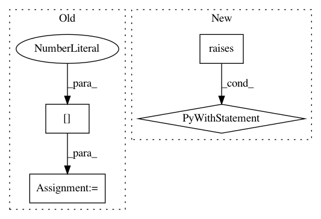

0bb3b9b7482e37e894469fdd9b2e2a45c3fe5355,tests/test_simulate.py,,test_simulate_given_rowid,#,67
Before Change
LIMIT 100
""")
row1_avg = bdb.execute("SELECT AVG(y) FROM row1").fetchall()
row1_avg = row1_avg[0][0]
row5_avg = bdb.execute("SELECT AVG(y) FROM row5").fetchall()
row5_avg = row5_avg[0][0]
// Mean of simulations for row 1 should be "significantly" larger.
assert row1_avg > row5_avg + 10
After Change
assert row5_avg + 10 < row1_avg
// Multiple specified rowids should produce an error.
with pytest.raises(bayeslite.BQLError):
bdb.execute("""
SIMULATE y FROM t_p
GIVEN oid = 5, rowid = 2 LIMIT 10;
""")
with pytest.raises(bayeslite.BQLError):
bdb.execute("""
SIMULATE y FROM t_p
GIVEN _rowid_ = 5, OID = 1, w = 3 LIMIT 10;
In pattern: SUPERPATTERN
Frequency: 3
Non-data size: 4
Instances
Project Name: probcomp/bayeslite
Commit Name: 0bb3b9b7482e37e894469fdd9b2e2a45c3fe5355
Time: 2016-10-21
Author: fsaad@mit.edu
File Name: tests/test_simulate.py
Class Name:
Method Name: test_simulate_given_rowid
Project Name: pandas-dev/pandas
Commit Name: 5a7514ccb18a3a506d453dd048c665c33835ee56
Time: 2020-12-11
Author: jbrockmendel@gmail.com
File Name: pandas/tests/indexes/categorical/test_indexing.py
Class Name: TestGetIndexer
Method Name: test_get_indexer_non_unique
Project Name: tyarkoni/pliers
Commit Name: 005968dcfbd2a8f70d8ea3957c8abba60a12492d
Time: 2018-05-15
Author: quinten.mcnamara@gmail.com
File Name: pliers/tests/filters/test_video_filters.py
Class Name:
Method Name: test_frame_sampling_video_filter